Database Management A database is an organised collection of data. Usually databases are composed of records that contains information about the same object (person, company, product, etc), and records are composed of fields that contains every piece of information (name, address, phone number, price, etc.). Example The next table show a students database with fields First name, Last name, Address, City, Birth date, Average grade and Passed credits. First name Last name Address City Birth date Average grade Passed credits María Sánchez García c. Estrella, 9 Madrid 23/10/1994 5,8 78 Carlos Pérez López c. Bravo Murillo, 34 3º-D Madrid 16/08/1993 7,9 123 Luis González Roca c. Antonio López, 67 1º-A Madrid 07/07/1995 8,2 45 Camen Aguirre Jordán c. Espada, 12 4º-C Sevilla 06/03/1994 4,2 28 Luisa Martín Garrido c. Cervantes, 14 Albacete 22/01/1994 6,7 54 Alberto Pintado Marín c. Arroyo, 27 2º-C Sevilla 10/03/1995 4,1 12 Marina Gómez Gómez c. Velázquez 28 4º-A Madrid 12/04/1994 7,7 62 Javier Yagüe Pinzón c. Rosales, 76 8º-B Madrid 18/12/1993 6,1 82 Lucas Guerrero Monzón c. Isaac Peral, 30 Bajo Albacete 12/01/1995 5,4 32 Database creation in Excel Excel allows to define databases as tables where fields are defined in columns and records in rows. The first row of the table contains labels for each field. This tables are also called data lists. To create a data list first enter the name of the fields in the first row of the table, each in one column. This first row with the field names is the headers row. Field names must be unique and there musn’t be blank cells in the headers row. After creating the fields enter first record data in the appropriate columns of the row immediately below the one containing the field names. To Excel recognise this table as a data list, click the Format as Table button on the ribbon’s Home tab and then click a thumbnail of one of the table styles in the drop-down gallery. After that you can enter the remaining records, one by row. After entering the data of a field press the Tab key to go to the next field of the same record, or to the first field of the next record if you are in the last field of a record. Example. The animation below shows how create a data list of students with the fields First name, Last name, Address, City, Birth date, Average grade and Passed credits. 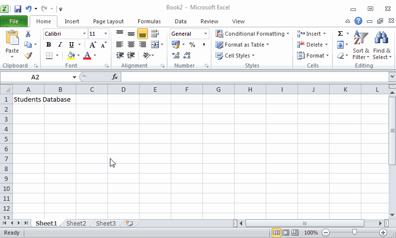 After creating a data list Excel will give a name to it, but is advisable to give it a descriptive name (see the Naming cells and ranges section). Data validation When entering data to a data list is important to validate data to maintain database integrity. Data validation allows to specify which type and range of data are accepted by a cell or field (column). To apply a validation rule to a field, select the field column of the data list and click Data validation button of the Data tools panel on the ribbon’s Data tab. In the dialog that appears, select the validation criteria from the drop-down list of the Setting: Whole number allows only integers numbers between a specified minimum and a maximum or greater o less than a specified number. Decimal allows decimal numbers between a specified minimum and maximum or greater or less than a specified number. List allows a list of defined entries. Date allows dates between two specified dates or before or after a specified date. Time allows times between two specified times or before of after a specified time. Text length allows text with a restricted length. After selecting the validating criteria, enter the correspondent parameters (minimum or maximum numbers, dates, times or range with the entries of the list). You can also define an input message in the Input Message tab and an error message in the Error Alert tab that will be shown if an invalid entry is entered in the field. Example. The animation below shows how create a validation rule for the Average grade field in a data list of students. 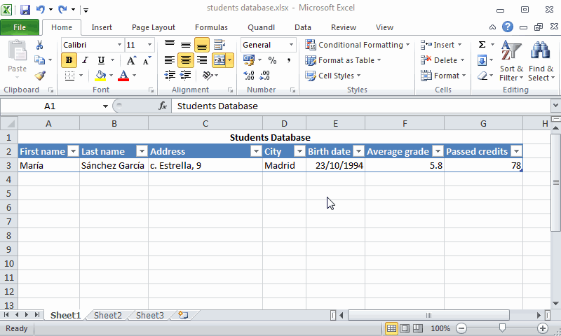 Importing databases Excel offers the possibility to import data from diverse sources like csv text files, XML files, relational databases like Access or web data sources. Importing data from csv text files To see how to import data from csv text file visit the section Import from csv format. Importing from web data sources There are many web pages that offers open data in a suitable format for import from Excel. To import data from a web data source click the From Web buttom of the Get External Data panel on the ribbon’s Data tab. This opens a web browser where you must enter the URL of the page with de data source. When the browser shows the data table some yellow arrows appears that allow you to select the rows and columns of the table to import. Example The animation below shows how to import the IBEX 35 serie from Yahoo finances. 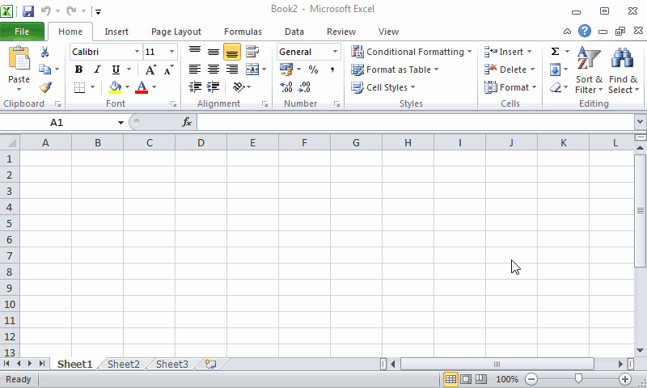 Importing data from Qandl Quandl is a finance and economic data repository with hundred of open data series. It’s possible to import data from Qandl to Excel easily, but you need the Quandl add in for Excel. To install the Quandl add in for Excel follow these instructions. After installing the add in a new tab labelled Quandl appears in the ribbon. To import a data serie from Qandl, first search the data serie clicking the Search button on the ribbon’s Quandl tab, enter some key words for the search and click the Show Results button, select the data serie desired from the search results, click the Insert Selected Codes buttom and click the Close button. This will insert the Quandl code of the data serie (if you know the Quandl code of the data serie you can avoid the search and enter it directly in a cell). Finally, select the cell with the Quandl code and click the Download button on the ribbon’s Quandl tab. This will download the data serie and put it in a range below the cell that contais the Quandl code. Example The animation below shows how to import the IBEX 35 serie from Quandl. 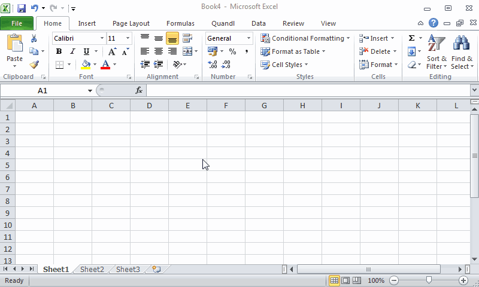 Data sorting To sort the data list records on a single field, you simply click that field’s AutoFilter button (the button with the triangle that appears to the right of the header) and then click the appropriate sort option on its drop-down list: Sort A to Z or Sort Z to A in a text field. Sort Smallest to Largest or Sort Largest to Smallest in a number field. Sort Oldest to Newest or Sort Newest to Oldest in a date field. Other option to sort a data list on a field is to select a cell of the field column an click the Sort A to Z button of the Sort & Filter panel on the ribbon’s Data tab, to sort ascending, or the Sort Z to A button to sort descending. Excel then will reorder all the records in the data list according to the ascending or descending order selected. Example. The animation below shows how to sort a students database. First ascending on the Birth date field, next descending on the Average degree field, and finally ascending on the Last name field. 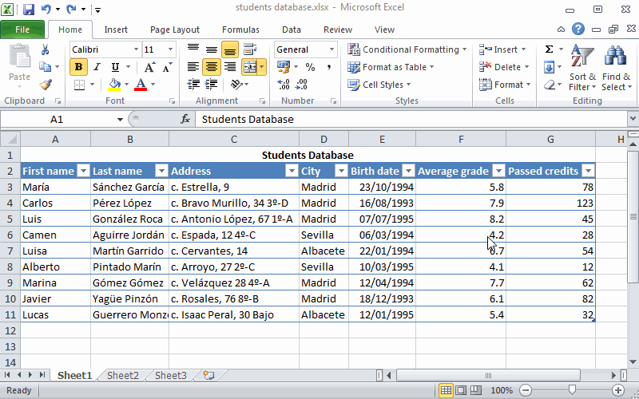 If you need to sort a data list on more than one field, select a cell of the data list and click the Sort button of the Sort & Filter panel on the ribbon’s Data tab. Then, in the dialog that appears, select the first sorting field column and the sorting order (ascending or descending), next the second sorting field column an the sorting order, and so on. Example. The animation below shows how to sort a students database on the fields City ascending and Average grade descending. 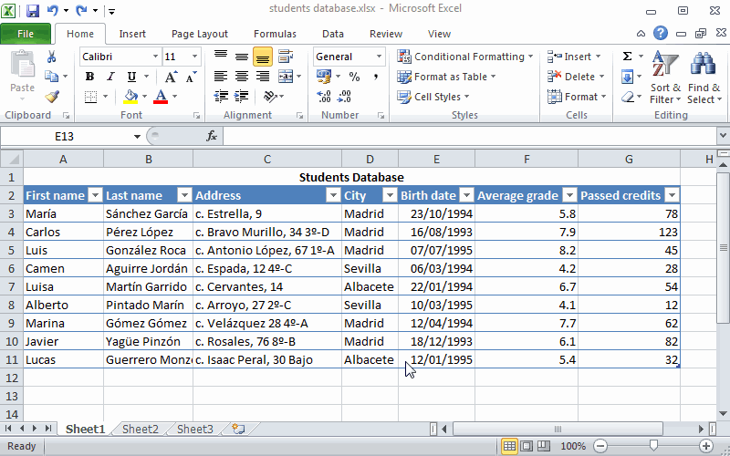 You can also sort a range of cells in general indicating the name of the columns instead of the field names. Summarizing data With large tables or data lists is difficult to extract relevant information. For that purpose, Excel provides several methods for summarizing data. Totaling and subtotaling fields A common operation is to apply a function to a whole field in a data list, as for instance the SUM function for summarizing or the AVERAGE function for averaging all the values in a field column. This could be done activating the Total row check box of the Table Style Options panel on the ribbon’s Table Options tab. This will add a total row at the bottom of the table. Clicking any cell of this row you can choose which function to apply to the whole field. Example The animation below shows how to sum the passed credits of students in a students database. It also shows how to average the average grade. 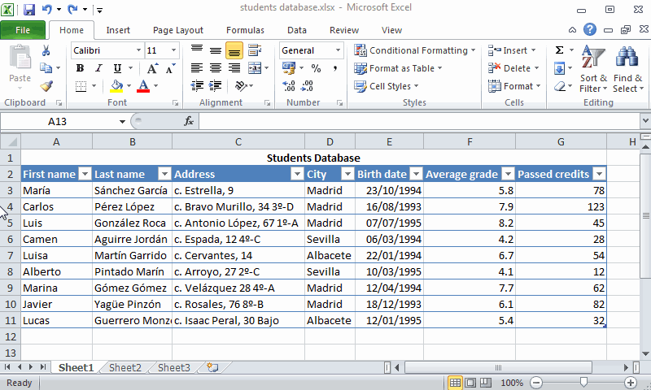 Excel also allows subtotaling a field by categories of other field. This procedure only works with data lists formatted like tables, so if a data list have been formatted like a table first it has to be converted to a range selecting any cell of the table and clicking the Convert to Range button of the Tool panel on the ribbon’s Table Tools - Design tab. After that, you have to sort the data list by the field with the categories to summarize (see the Data sorting section). Finally, to subtotaling a data list click the Subtotal button of the Outline panel on the ribbons’ Data tab. This will display a dialog where you have to select the field with the categories in the At each change in drop-down menu, the function to apply (sum, count, average, etc.) in the Use function drop-down menu, check the fields to with apply the subtotaling function in the Add subtotal to list, and click OK. Example The animation below shows how to subtotaling the passed credits of students in a students database by the city where they live. 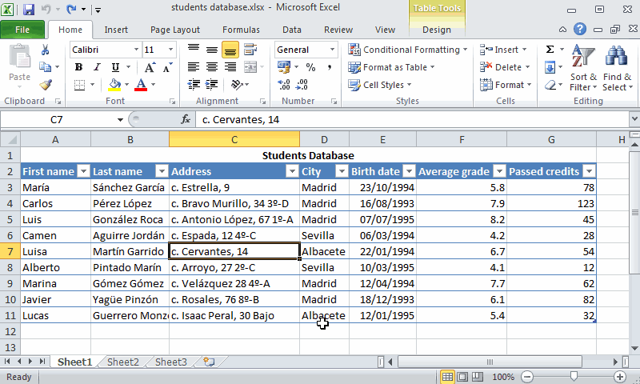 Pivot tables A pivot table is a powerful tool for exploring data. It help you organise and summarize the raw data in your data list, revealing patterns or relationships that might not be obvious at first glance. To create a pivot table click on any cell of a data list and then click the PivotTable button on the ribbon’s Insert tab. This display a dialog where you can select the range for the pivot table (by default Excel select the whole data list) and choose between placing the pivot table in a new workbook (default) or in the same workbook (in this case you have to indicate in which cell). After click OK, a pane appears on the right side of the pane: Report Filter for the fields that enable you to page through the data summaries shown in the actual pivot table by filtering out sets of data — they act as the filters for the report. So, for example, if you designate the Year Field from a data list as a Report Filter, you can display data summaries in the pivot table for individual years or for all years represented in the data list. Column Labels for the fields that determine the arrangement of data shown in the columns of the pivot table. Row Labels for the fields that determine the arrangement of data shown in the rows of the pivot table. Values for the fields whose data are presented and summarized in the body cells of the pivot table. By default Excel will use the SUM function to summarize values. To use another function click the field and select the Value Field Settings option in the menu that appears. In the dialog that appears just select the function that you want to use for summarizing and click OK. Example The animation below shows how to create a pivot table for a students database. The pivot table shows and summarizes the passed credits by degrees on rows and by cities on columns. 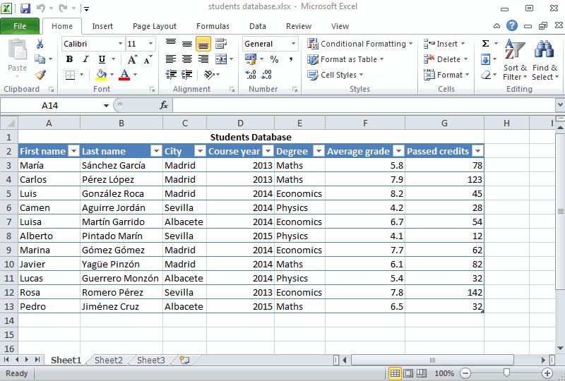 The animation below shows how to arrange the previous pivot table to show the passed credits summarized first by city and then by degree and vice versa, both on rows. The animation below shows how to arrange the previous pivot table to show, in addition to the passed credits, the average grade of students. The passed credits are summarized using the SUM function while the average grade is summarized using the AVERAGE function. The animation below shows how to filter the previous pivot table to show only the values of course year 2014 and not to show the physics degree. To change the format of a pivot table you can use the Layout panel on ribbon’s PivotTable Tools - Design tab. This panel has four buttons: Subtotals Allows to show subtotals at top of groups, at bottom of groups or not to show subtotals. Grand Totals Allows to show grand totals for rows, for columns, for both rows and columns, or not to show grand totals. Report Layout Allows to show the groups in compact form (all the grouping fields in the same column), in outline form (every grouping field in a different column) or in tabular form (like the outline form but adding extra rows for the subtotals). Blank rows Allow to insert or not a blank row after each group. It’s also possible to apply a predefined style to a pivot table just selecting the desired style from the PivotTable Styles panel on ribbon’s PivotTable Tools - Design tab. Example The animation below shows how to format and how to apply a style to the previous pivot table. Pivot chart Pivot tables can be accompanied by pivot charts, that is an interactive chart where you can present and summarize data grouped by some fields like a in a pivot table. To create a pivot chart from a pivot table, in the worksheet with the pivot table click the PivotChart button of the Tools panel on the ribbon’s PivotTable Tools - Options tab. This will show a dialog with the charts types. Select the desired chart type and click OK. After that Excel inserts a chart in the same worksheet of the pivot table reflecting the same information of the pivot table. Fron now on, any change in the pivot table will be reflected in the pivot chart. Example The animation below shows how to create a pivot chart from a pivot table for a students database. Of course, you can change the pivot chart layout as any other chart (see section Chart layout). Data filtering With huge databases it’s difficult to find the desired information. To overcome this problem Excel provide several methods to filter the database. Filtering is the procedure for specifying the data that you want displayed in an Excel data list. Apply a simple filter The easiest way to perform this basic type of filtering on a field is to click the AutoFilter button (the button with the triangle that appears to the right of the header). This display a drop-down menu that contains at the end a list box with a complete listing of all entries made in that column, each with its own check box. In this list click the check box in front of the (Select All) option at the top of the field’s list box to clear the check boxes, then click each of the check boxes corresponding to the entries for the records you do want displayed in the filtered data list, and finally click OK. Excel then hides rows in the data list for all records except for those that contain the entries you just selected. Example The animation below shows how to filter the students of Sevilla and Albacete in a students database. To perform more sophisticated filters you can use the other filter options of the AutoFiller button. These filter options depend on the type of entries in the field: If the column only contains dates, the menu contains a Date Filters option with a submenu that allows you to filter dates equals to, before o after a given date; dates between two given dates; dates of today, yesterday and tomorrow; dates of this week, last week and next week; dates of this month, last month and next month; dates of this quarter, last quarter and next quarter; dates of this year, last year and next year; and dates in a specific period (quarter or month). If the column contains only numbers or a mixture of dates with numbers, the menu contains a Number Filters option with a submenu that allows you to filter numbers equal or not equal to a given number; numbers greater than, greater than or equal to, less than, less than or equal to a given number; numbers between two given numbers; top 10 numbers; number above the average and numbers below the average. If the column only text or a mixture of text, date and numbers, the menu contains a Text Filters option with a submenu that allows you to filter text equal or not equal to a given text; text that begins or end with a given text; and text that contains or does not contains a given text. If the filter selected requires some parameter (date, number or text), a dialog appears where you must enter that data and click OK. Example The animation below shows how to filter the students born before 1/1/1995, with an average grade greater than or equal to 5, and whose name begins with M, in a students database. 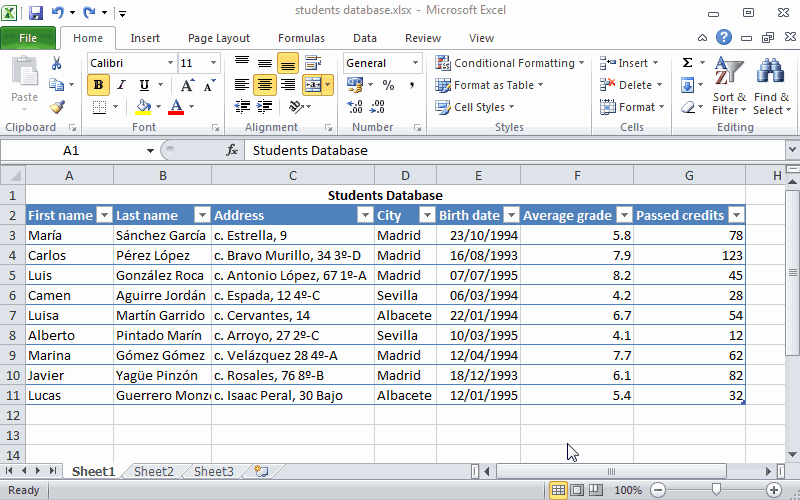 Apply a complex filter Simple filters are enough in most cases, but sometime you need to filter data according to more complex criteria. Fortunately Excel provides a method to perform filters based on calculated criteria with formulas. To perform a filter with calculated criteria first you have to specify the criteria somewhere in the worksheet that contains the data list. The criteria must have a cell header and a logical formula in the cell just below. In the logical formula you can use functions and references to the cells, but it’s important to note that all references must be to cells in the first row of the data list. After that, to apply the filter you need to select a cell in the data list and click the Advanced button of the Sort & Filter panel on the ribbons’s Data tab. This shows a dialog where you have to enter the range of the data list (usually Excel auto recognise it), the range of the filter criteria and click OK. Excel will apply the logical formula to every row of the data list and show only the records where the formula returns TRUE. Example The animation below shows how to filter the students with an average grade greater than or equal to 5, and a number of passed credits over the average, in a students database, using a calculated criteria. Observe how is used the data list name and the field name to reference the column of passed credits in the average calculation. Clear a filter To clear an active filter in a data list click the AutoFilter button of the column with the active filter and select the option Clear Filter. After that Excel will show all the records hidden by the removed filter, but the rest of filters will continue active. To clear all the filters in a data list, select a cell of the data list and then click the Clear button of the Sort & Filter panel on the ribbons’s Data tab. This will show all the records of the data list. Database functions Excel have some predefined functions that can be applied to data list. Some of them apply other function only to records in a data list that match a criteria you specify. Define a criteria The criteria must be defined in a range and must include at least one header with a field name that indicates the field whose values are to be evaluated and one cell just below with the value or expression to be used in the evaluation. The expression with the condition is a text string starting with a logical comparator (=,>,<,>=,<=,<>) or a pattern text with wildcards like the question mark ? (that matches any character) or the asterisk * (that matches any character string). You can specify multiple conditions in different columns. If you want to apply the function to all the records of the data list, just leave the cell with the criteria conditions blank. DSUM function The DSUM function sums the values in a numeric field (column) of records in a data list that match the criteria you specify. Its syntax is DSUM(database,field,criteria), where database is the range of the data list, field is the name of the field that contains the values to add up (it must be a numeric column) enclosed in double quotes, and criteria is the range that contains the criteria with the conditions you specify. Example The animation below shows how to sum the passed credits of students from Madrid born in 1994 or after with an average grade greater or equal to 6, in a students database. DCOUNT function The DCOUNT function counts the values in a numeric field (column) of records in a data list that match the criteria you specify. Its syntax is DCOUNT(database,field,criteria), where database is the range of the data list, field is the name of the field that contains the values to add up (it must be a numeric column) enclosed in double quotes, and criteria is the range that contains the criteria with the conditions you specify. Example The animation below shows how to count the students with an average grade greater than or equal to 6 whose name begins with L, in a students database. 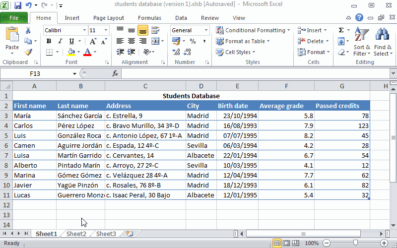 DMIN function The DMIN function returns the minimum in a numeric field (column) of records in a data list that match the criteria you specify. Its syntax is DMIN(database,field,criteria), where database is the range of the data list, field is the name of the field that contains the values to add up (it must be a numeric column) enclosed in double quotes, and criteria is the range that contains the criteria with the conditions you specify. DMAX function The DMAX function returns the maximum in a numeric field (column) of records in a data list that match the criteria you specify. Its syntax is DMAX(database,field,criteria), where database is the range of the data list, field is the name of the field that contains the values to add up (it must be a numeric column) enclosed in double quotes, and criteria is the range that contains the criteria with the conditions you specify. Example The animation below shows how to calculate the minimum and the maximum average grade of students from Madrid born before 1995, in a students database. DAVERAGE function The DAVERAGE function averages the values in a numeric field (column) of records in a data list that match the criteria you specify. Its syntax is DAVERAGE(database,field,criteria), where database is the range of the data list, field is the name of the field that contains the values to add up (it must be a numeric column) enclosed in double quotes, and criteria is the range that contains the criteria with the conditions you specify. Example The animation below shows how to average the average grades of students from Madrid born in 1994 or after with an average grade greater or equal to 6, in a students database. DSTDEVP function The DSTDEVP function calculates the standard deviation the values in a numeric field (column) of records in a data list that match the criteria you specify. Its syntax is DSTDEVP(database,field,criteria), where database is the range of the data list, field is the name of the field that contains the values to add up (it must be a numeric column) enclosed in double quotes, and criteria is the range that contains the criteria with the conditions you specify. Example The animation below shows how to calculate the standard deviation of average grades of students from Madrid born in Madrid before 1995, in a students database. 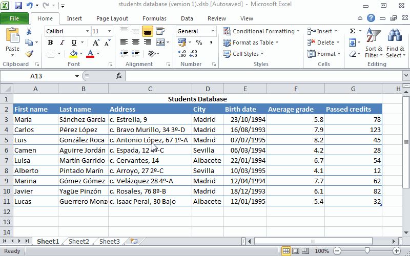 DGET function The DGET function returns the value of field (column) in the record of a data list that match the criteria you specify. Its syntax is DGET(database,field,criteria), where database is the range of the data list, field is the name of the field that contains the values to return enclosed in double quotes, and criteria is the range that contains the criteria with the conditions you specify. If no record satisfy the criteria, the function returns a #VALUE! error, and if more than one records satisfy the criteria the functions return a #NUM! error. Example The animation below shows how to find the student with the highest grade in a student database. Other functions allow to search values in a list or table. VLOOKUP and HLOOKUP functions The VLOOKUP function finds things in a table or list by row. Its syntax is VLOOKUP (value, table, col-index, [approx-match]), where value is the value you want to look up, table is the range of the table or list in which to perform the search, col-index is the the column number (starting with 1 for the left-most column of table range) that contains the return value, and approx-match is an optional logical argument that specifies whether to find an approximate match (TRUE by default) or an exact match (FALSE). The function looks the value argument up in the first column of the table argument. If the approx-match argument is TRUE, the table should be ordered by the firs column (the column where to look the value up) and the function will return the value of the col-index column in the same row that the closest value to value in the first column of the table range. If approx-match is false, the function will search for the exact value in the firs column and it will return the value of the col-index column in the same row that the first matched value in the first column. If no value in the first column matches the value argument, the function will return a #N/A error. Example The animation below shows how to look the phone up of a student in a students database. 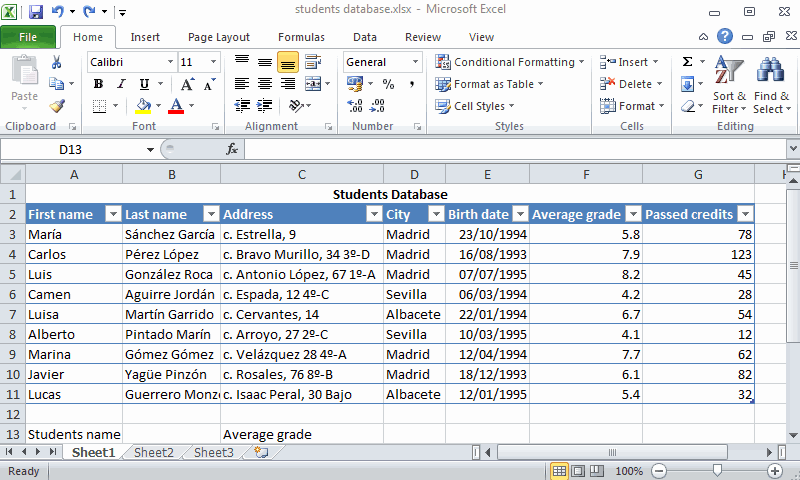 The HLOOKUP function works like the VLOOKUP function but it performs a search by columns. Its syntax is HLOOKUP (value, table, row-index, [approx-match]), where value is the value you want to look up, table is the range of the table or list in which to perform the search, row-index is the the row number (starting with 1 for the top-most row of table range) that contains the return value, and approx-match is an optional logical argument that specifies whether to find an approximate match (TRUE by default) or an exact match (FALSE). Excel Previous Plotting Charts